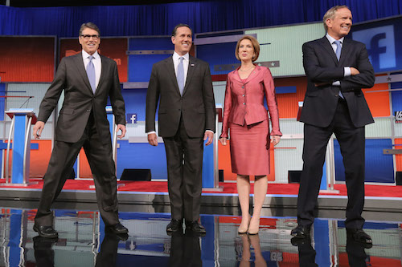
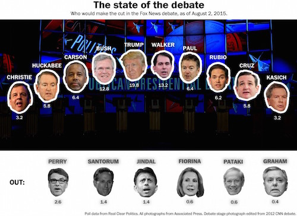
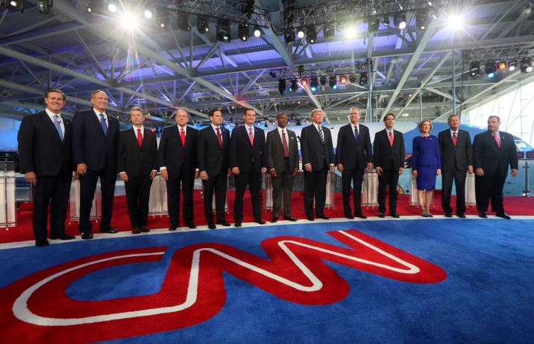
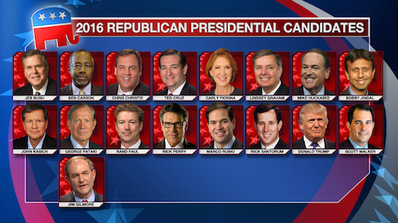
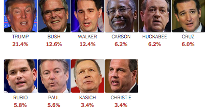
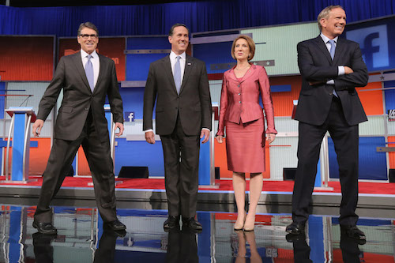
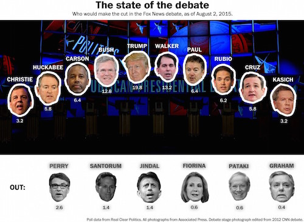
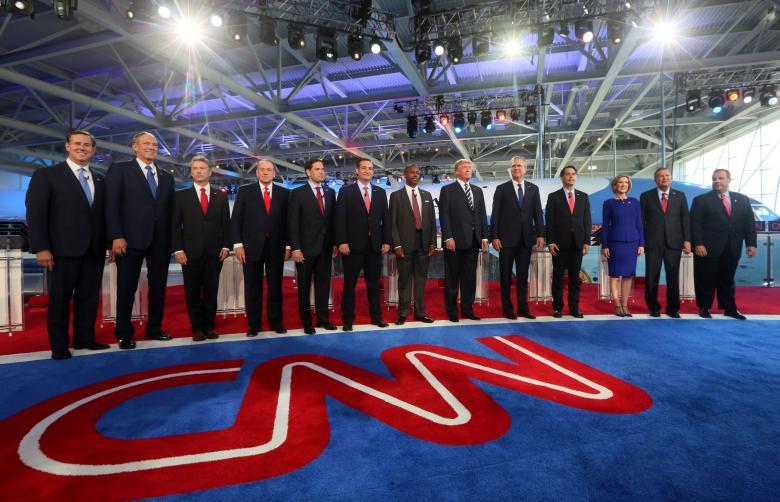
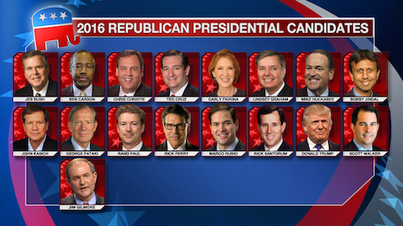
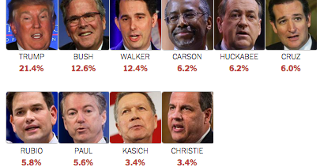

Reports on the Republicans
FACTCHECK Corner
Republican presidential candidates debated once again on economic issues and offered some misleading takes on jobs, tax plans, immigrants and state budgets.- Florida Sen. Marco Rubio said that “welders make more money than philosophers.” Actually, those with undergraduate degrees in philosophy earn a higher median income than welders.
- Businessman Donald Trump said that President Dwight D. Eisenhower had forced out 1.5 million immigrants who were in the country illegally. The federal government claimed it was 1.3 million, but historians say that’s exaggerated.
- Texas Sen. Ted Cruz said the Tax Foundation calculated that his tax plan “costs less than virtually every other plan people have put up here, and yet it produces more growth.” But the foundation said Bobby Jindal ’s and Rubio ’s plans both would lead to higher gross domestic product growth over a decade.
- Cruz also repeated the years-long falsehood that there’s a “congressional exemption” from Obamacare. Members of Congress and their staffs face additional requirements than other Americans, not fewer.
- Louisiana Gov. Bobby Jindal said that his state has had “eight credit upgrades,” but two credit rating agencies moved the state to a “negative” outlook in February. And it faces a $117 million deficit in its most recent budget.
- Former Arkansas Gov. Mike Huckabee said he had cut his state budget by 11 percent during the 2001-2003 recession. Over his entire tenure, however, spending went up by 50 percent.
- Jindal claimed that there were “more people working in Louisiana than ever before.” That’s wrong. There were fewer Louisianans working in September than there were in December 2014.
- Huckabee said that Syrians make up only 20 percent of the refugees arriving in Europe. The figure is actually 52 percent for 2015.
Robert Costa's Perspective
Bush needed a big night to reassure skeptics and kick-start his comeback. While he didn’t have a signature moment Tuesday in a debate that generally lacked fire and star turns, he was feistier than usual, issuing a wake-up call to traditional Republicans about the party’s drift toward outsiders and showing his policy chops on federal regulations. He called out Donald Trump for having a worldview fit for a “board game” and warned his party not to lurch to the right on immigration. What he avoided was also telling: jabs at Marco Rubio . He remains a seasoned voice for pragmatism and foreign-policy hawks, and he appears in recovery if not resurgent. This is in relation to immigrants.
Ben Carson does not care for debates. He has said this repeatedly, as have his advisers. The high-wattage forums don’t fit his soft-spoken style, and his campaign doesn’t need them to get attention from grass-roots activists. Both points held true on Tuesday. What mattered was how he shrugged off mounting questions about his biography, a move that may steady his candidacy, at least in the eyes of supporters. When he swatted the press, he drew appreciative cheers and was encouraged by conservatives on Twitter. Less effective were his muddled answers on foreign policy and on a minimum wage hike, which he once said he could “possibly” back but now opposes.
Cruz is quickly earning a reputation as a sensei of these primary debates, and deservedly so. Even when he’s not the clear star of the night — and he rarely is — he comes fully prepared to make his case to conservatives, armed with cutting answers on everything from sugar subsidies to immigration, where he is aligned with Republicans who are suspicious of the push for reform from the GOP donor class. Most key lines, including the one about the Bible, have been crafted for Iowa, where his campaign sees an opportunity for a bounce next year. He soldiers on, improving with time and exposure in the same manner as Rubio — but from the hard-line wing. A clash between the two senators may loom, should their current trajectories continue.
The defining line from Carly Fiorina ’s night didn’t come from Fiorina but from Donald Trump , who complained that she kept “interrupting everybody.” It was a political gift. The crowd rallied to her side, a reminder that in a field stocked with men, she is a formidable presence who occasionally gets under her rivals’ skin. While Fiorina didn’t burst out of Milwaukee with the kind of momentum she had after the September debate, she did leave stronger, punching up and delivering a harsh critique of her favorite foil, Hillary Rodham Clinton. Her mention of her battle with cancer continued an ongoing introduction for voters still learning about her. While she’s hardly surging, she remains an option for both establishment and grass-roots Republicans.
If Bush played the role of edgy moderate, Kasich played the role of edgy moderate after downing a Red Bull. Both came unhappy with the party’s embrace of Trump and Carson and hoped to convince voters to move back toward the middle. Both cast themselves as governors with proven records who oppose mass deportation. Kasich did so as a fast-talking, exasperated truth-teller. “Come on, folks,” he said, shaking his head. It was a direct play for those New Hampshire voters who admire flinty, combative centrists. But boos were heard as Kasich stumbled through a discussion of bank bailouts — a reminder that his work for Lehman Brothers remains a liability.
The latest whisper in Washington is that Paul ’s presidential campaign is nearing its end and he may soon return to Kentucky to focus on his reelection to the Senate. But if Tuesday was any indication, Paul isn’t going anywhere. He sent a libertarian message to longtime supporters of his father, former congressman from Texas Ron Paul , that when it comes to curbing the power of the Federal Reserve and confronting Republican hawks, he is their spokesman. He was also upbeat and noticeably less crabby than he has been at previous debates, another sign that he’s not retreating from a contest he has bemoaned as a circus. He’ll now get another look from his dad’s backers who had fallen away, which is necessary for a shot at success in New Hampshire.
If there were an award for blending your stump speech into debate answers, it would regularly be given to Rubio , who continues to stay on message and polished as he climbs in national polls. On Tuesday, he also made passionate overtures to blocs he hopes to bring more fully into his coalition. His rumble with Paul on military spending warmed the hearts of defense hawks. His “welders” line was a bid for the support of conservatives frustrated by the political class. To those concerned about his youth and inexperience, he delivered takes on foreign policy with presidential self-assurance. It was the performance of a natural who sees a path to the nomination slowly opening up, as long as he can stay in his lane.
The billionaire front-runner was comfortable from the start, laying out his platform in broad strokes and mostly steering clear of the heated clashes that once defined his candidacy. On trade, he spoke directly to working-class Republicans wary of the Trans-Pacific Partnership and Chinese currency manipulation. On foreign policy, his non-interventionist instincts flared. He returned to his core themes: an aggressive approach to illegal immigration and a promise to restore the spirit of a country that “does not win anymore.” There were scattered tiffs, such as his exchanges with Kasich and Fiorina , but Trump seemed more irritated than animated by them.
Presentation
 










David Weigel's Perspective
Bush entered the campaign in a no-win situation. Had he been given a chance to attack Rubio again, he might have tried and been rolled — or ducked it and been branded a wimp. Lucky for him, the chance never came; instead, he reminded the base of its problems with him on immigration while letting Rubio off the hook. Bush ’s insistence that talk of immigration restriction weakened the party was at odds with what the base believes, a point exploited moments later by Ted Cruz . Bush was left arguing that he alone had the experience to undo onerous regulations. “Jeb can fix it” messaging aside, it’s a tough and unexciting sell.
It would be generous to say that Carson muddled through. He offered specific-sounding policies that he had not litigated previously and that he seemed uninterested in defending after the debate, from his new minimum-wage skepticism to his theory that corporations use “very low interest rates to buy back their stock and to drive the price of that up artificially.” The Carson phenomenon has grown out of conservative respect for his intelligence and his honesty, both of which the media now challenge openly. It’s good for Carson that he’ll get to face those challenges in individual interviews, where conservatives take his side, rather than another looming debate where he contrasts poorly.
Nobody benefited more from Fox Business Network’s light touch than Cruz , whose sweeping statements about the economy sometimes failed a reality test while passing an ideological one. (It was remarkable that a business network did not nudge him on support for a new gold standard.) The irony was that friendly, possibly cowed moderators robbed Cruz of his softest targets. That’s not a problem for the rest of his campaign — skeptical reporters are everywhere he goes — but at times, his big ideas were as loose as Carson ’s. Cruz ’s goal, as it has been, is to remain the candidate that Carson / Trump voters would rather see debate Hillary Rodham Clinton, and he didn’t get much closer to that goal with anything he said on Tuesday.
Fiorina approached both the truth and the buzzer like a tank approaches a field of daisies. No candidate is as good at riding the crowd to get to her preferred talking points – not even Rubio . But Fiorina ’s gains have faded while media scrutiny has stayed at front-runner levels. During the debate, and in the spin room, she found herself challenged on ideas like a three-page tax code and her 2001 meeting with Vladimir Putin — the one she told Jimmy Fallon had occurred in a “green room setting,” before telling the debate audience she did not merely meet Putin in a green room. One challenge for Fiorina : the rise of Rubio as an equally eloquent force, with harder-to-peg dissembling.
No candidate confounded his rivals – on purpose – the way Kasich did. ( Carson just confused them by habit.) Since 2008, when election losses made the Republican Party effectively irrelevant in the aftermath of the financial crisis, its candidates have opposed bank bailouts. Kasich may have been the first Republican to demand a chance to defend bailouts. He did it on the terms that the GOP’s Chamber of Commerce wing agrees with, and he did it by criticizing the candidate whom those interests like the least: Ted Cruz . Kasich ’s campaign is convinced that Bush can only continue to decline and that he can run the “moderate” lane in New Hampshire.
Like Bill Murray’s reporter in the movie “Groundhog Day,” stuck in an infinite chronological loop, Paul has re-lived a similar debate four times. He has entered each one promising to differentiate his libertarian views. He has done so, and he has not budged in the polls. His clash with Rubio on Tuesday, the highlight of the debate for him, mirrored an exchange with Chris Christie three debates earlier — when neither man benefited. But the compliance of debate moderators let Paul coherently describe his tight budgets with little follow-up about detail. Paul ’s challenge remains deceptively simple: Convincing the party’s libertarian wing to keep him relevant in New Hampshire. He got closer, but he thought he’d done the same in August, September and October.
The senator from Florida’s team was astonished at how well Tuesday night went. Expectations were high, and several candidates were at risk of being made irrelevant, so Rubio was girded for attacks that never came. Trump never swung at Rubio on “amnesty.” Bush , who had no obvious avenue of attack, did not dare take a swing of his own. Strikingly, nothing Rubio said was new — I heard him use many of these lines verbatim at a Monday campaign stop — but everything landed, including the foreign policy lines that benefited both him and Paul . With one month to go until the next debate, I’d look for Rubio and his allies to box out Bush , and perhaps focus on painting a contrast with Clinton.
Trump ’s gravity-defying method of debate was on display again Tuesday, complete with dropped or swapped words that made accidental points for him. (That started with him saying “wages too high” when he meant to discuss the minimum wage, in particular.) But his slow, strange evolution into a normal candidate continued, in ways that did not always help. He missed yet another opportunity to attack Rubio ’s immigration record. And most remarkably, he declined to swing at Paul after the senator pointed out (correctly) that China was not a party to the TPP. Crowds have not stopped filling stadiums to see him, but he’s adapting slowly to the new race.
Presentation:
Donald Trump's Campaign Website
Thousands packed the Ford Arena in Beaumont Saturday, to hear Republican Presidential Hopeful Donald Trump speak. He put immigration and closing the country’s borders at the top of his agenda, and coming a day after Paris’ deadly terrorist attacks it’s a message the crowd wanted to hear.
Rand Paul's Campaign Website
U.S. Senator Rand Paul, M.D., is one of the nation’s leading advocates for liberty. Elected to the United States Senate in 2010, Dr. Paul has proven to be an outspoken champion for constitutional liberties and fiscal responsibility. As a fierce advocate against government overreach, Dr. Paul has fought tirelessly to return government to its limited, constitutional scope.
Ben Carson's Campaign Website
But growing up poor in a single-parent household in Detroit with bad grades and a horrible temper, the statistics were certainly not in his favor.
Fortunately, Ben’s mother, having only completed third grade herself, challenged her two children to reach beyond their meager circumstances through reading and building their knowledge of the world.
Carly Fiorina's Campaign Website
But growing up poor in a single-parent household in Detroit with bad grades and a horrible temper, the statistics were certainly not in his favor.
Fortunately, Ben’s mother, having only completed third grade herself, challenged her two children to reach beyond their meager circumstances through reading and building their knowledge of the world.
John Kasich's Campaign Website
Husband, father, friend, person of faith, leader, change agent…John Kasich is a lot of things and through it all runs his honest, direct, authentic, tenacious approach to life that has allowed him, time and again, to do what they said couldn’t be done and, as his mom told him as a boy, “make things a little better because you were there.
Information is from This website